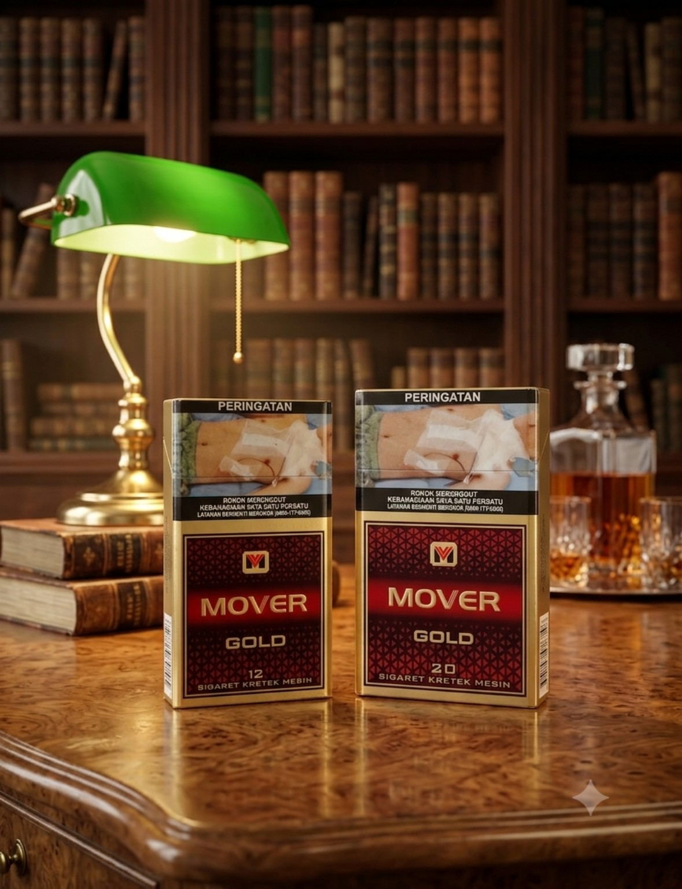
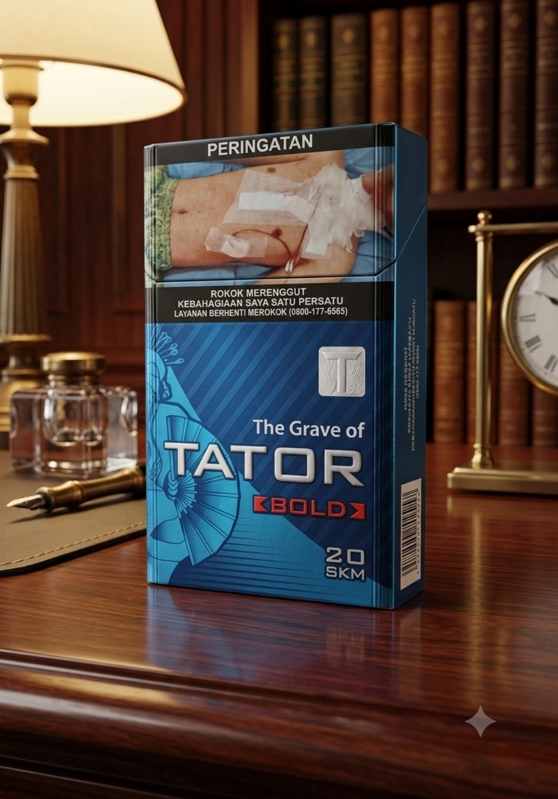
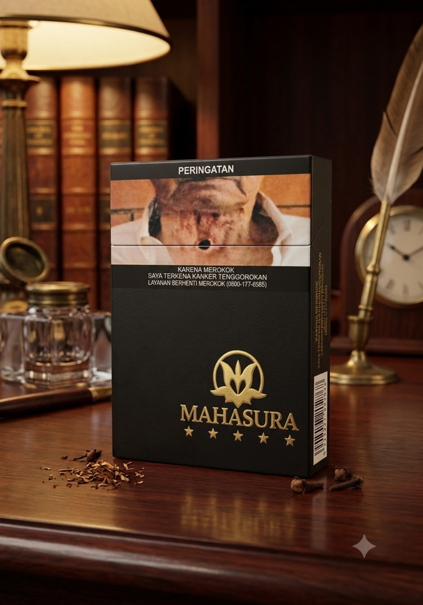
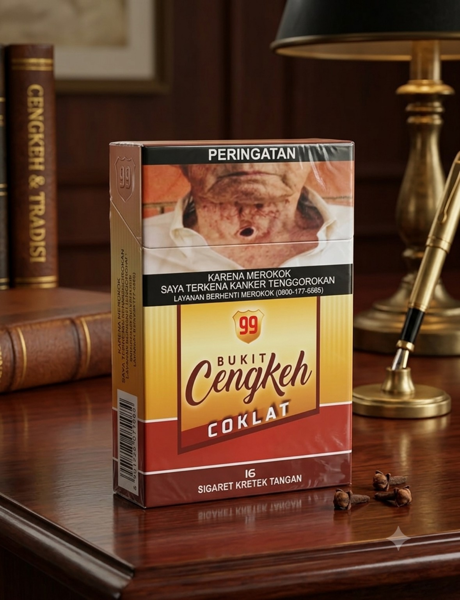
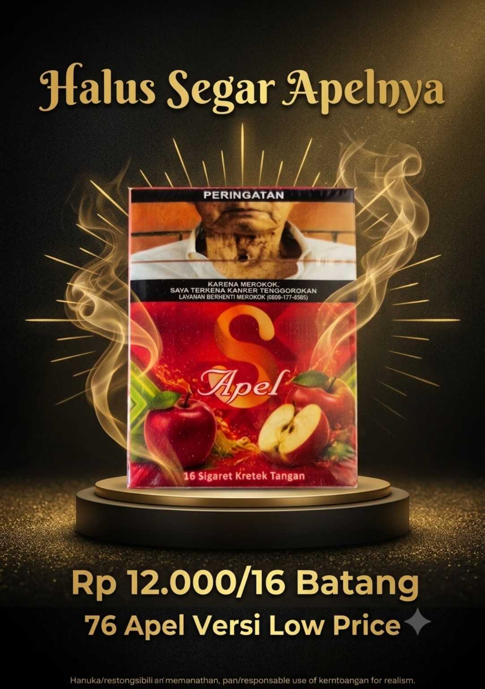
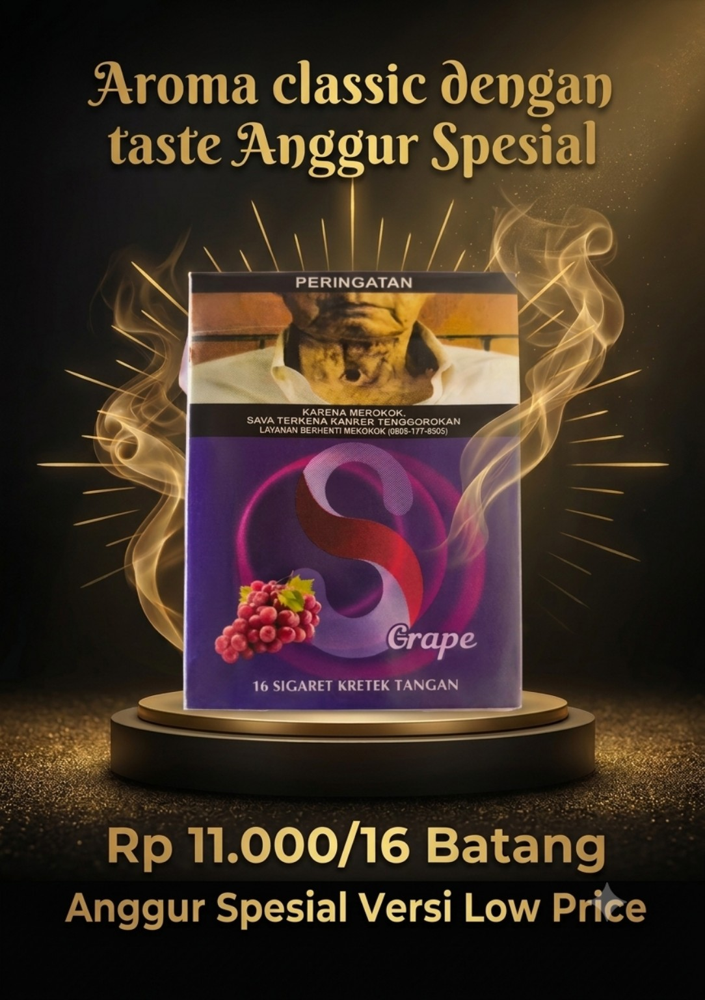
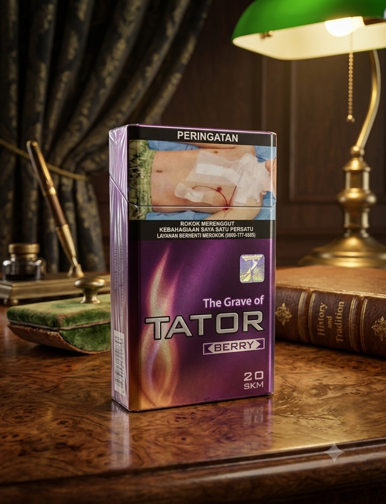
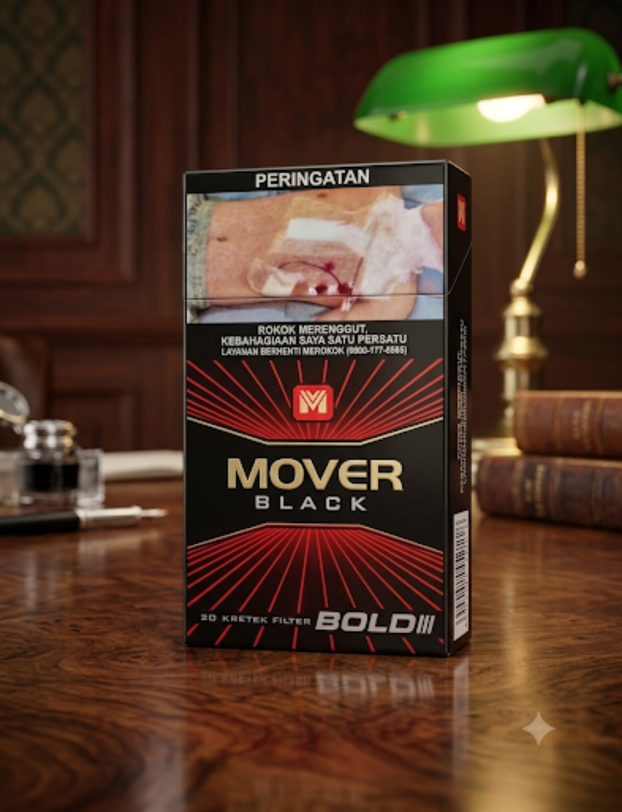
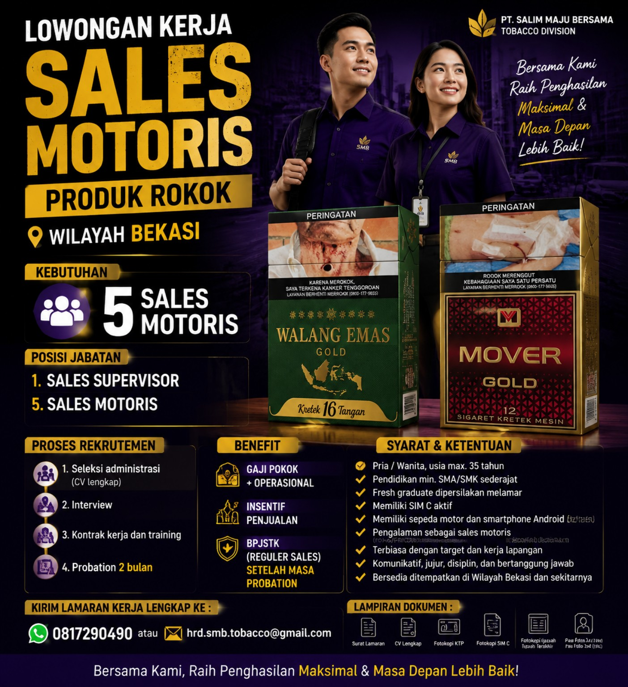

Sales Motoris
Aktivitas penjualan langsung dengan mobilitas tinggi dan rutinitas kunjungan outlet.
PT. SALIM MAJU BERSAMA
Membangun pertumbuhan melalui distribusi, pelayanan pelanggan, dan tim lapangan yang bergerak bersama.

TENTANG KAMI
PT Salim Maju Bersama (SMB) hadir dengan fokus pada pengembangan distribusi dan aktivitas penjualan di wilayah Bekasi. Kami membangun cara kerja yang terstruktur, dekat dengan pelanggan, dan berorientasi pada pertumbuhan jangka panjang.
SMB menempatkan manusia, pelayanan, disiplin eksekusi, dan hubungan yang sehat sebagai fondasi untuk mencapai tujuan bersama.
BISNIS & OPERASIONAL
Tim sales motoris bergerak langsung ke outlet untuk menjaga ketersediaan produk, membangun hubungan, menerima pesanan, dan memastikan eksekusi di lapangan.
Aktivitas penjualan langsung dengan mobilitas tinggi dan rutinitas kunjungan outlet.
Membangun jaringan distribusi yang mendukung ketersediaan produk dan perluasan pasar.
Menjaga komunikasi, ketepatan pesanan, dan hubungan baik dengan pelanggan.
PRODUK
Gunakan galeri ini sebagai area visual produk. Nama dan informasi produk dapat dikembangkan sesuai katalog resmi perusahaan.








CORE VALUE SMB
Satu Nilai • Satu Tujuan • Satu Perjalanan
DISTRIBUSI
SMB mengembangkan cakupan distribusi melalui pengelompokan wilayah, kunjungan outlet, dan dukungan jaringan grosir.
JOIN THE TEAM
SMB membuka peluang untuk talenta yang siap bekerja di lapangan, membangun relasi, mengejar target, dan berkembang bersama tim.

PT SALIM MAJU BERSAMA